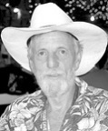

| Home |
Town |
Area |
History |
Links |

Edward Fales Alexander, 1942 - 2009
Edward Alexander was an extraordinary person and a special friend to all who knew him. His sudden, tragic passing on October 17, 2009, in an accident on the Medina River, has left a large void in our lives but we can continue to enjoy the rich tapestry he wove during his much too short but brilliantly traveled journey. Ed never met a stranger. Together, he and his beloved wife Brigit joyfully welcomed all comers to their enchanted homes in Real de Catorce, Mexico, and Austin, Texas. Ed had more friends than there are stars in the Texas sky and all who were blessed to have known him are better, happier people for the experience.
Ed was born in Amarillo, Texas on November 25, 1942. He loved his Texas roots, a favorite topic for his endless tales. He graduated from Vanderbilt University and received a graduate degree in physics from the University of Texas at Austin in 1968. Ed was always in the middle of the fun, both the kindest and most cantankerous of the bunch, at once a shining light on your shoulder and a practical man of the earth. A traveler at heart, he trotted the globe the way some people walk around the block.
Of his adventures, perhaps Ed loved those involving caves most of all. Having joined the NSS earlier he fell in with a circle of Austin cavers in 1964 and those adventurers remained friends to the end; they were with him at the Texas Cavers Reunion in Paradise Canyon the night he died. Ed and Brigit met in Real de Catorce, Mexico, and they were married in 1992. Before moving back to Austin in 2008, Ed and his family lived for twelve years in Catorce.
Ed continued to explore, traveling and camping around Mexico and hiking the Catorce Range with family and friends and his dog, Cleo. He would load up his red Isuzu Trooper with Brigit and son Luc and put his daughter Mimi on top with Cleo running behind as they climbed up the rugged mountain roads to scenic, wonderful places. If Luc found a snake in the road, Ed would pick it up and preserve it in the freezer for later dissection with the kids. Learning was an everyday adventure at the Alexander home. Ed's children, Thomas, Mimi and Luc--kind, compassionate, and curiosity-filled--are a testament to the care and love Ed gave them. From his youngest days Thomas was always included with the many adventures of Ed whether camping in the Sierra Madres, cooking at the TCR events or running the rivers of Central Texas. Ed traveled the road from Austin to Catorce and back with Thomas many times. If night fell and they were tired, they would pull off the road, put down their sleeping bags and sleep under the stars.
The stories about Ed would fill a book; the stories that he told would fill another. His life revolved around all kinds of human communities in Austin and Mexico: cavers, musicians, river runners, movie makers, artists, craftspeople, archeologists, and computer programmers.
Ed was preceded in death by his parents, Kleim and Myrtle Alexander, and his brother Charles. He is survived by his wife, Brigit; daughter, Mimi; and sons, Thomas and Luc; nephew, Chuck and niece Susanne.
Vaya con Dios, Eduardo. We miss you so much. A
celebration of Ed's life with family and friends has been planned. Friends
are encouraged to bring a picture, a written memory or a memento to be
included in a book for his family to keep.